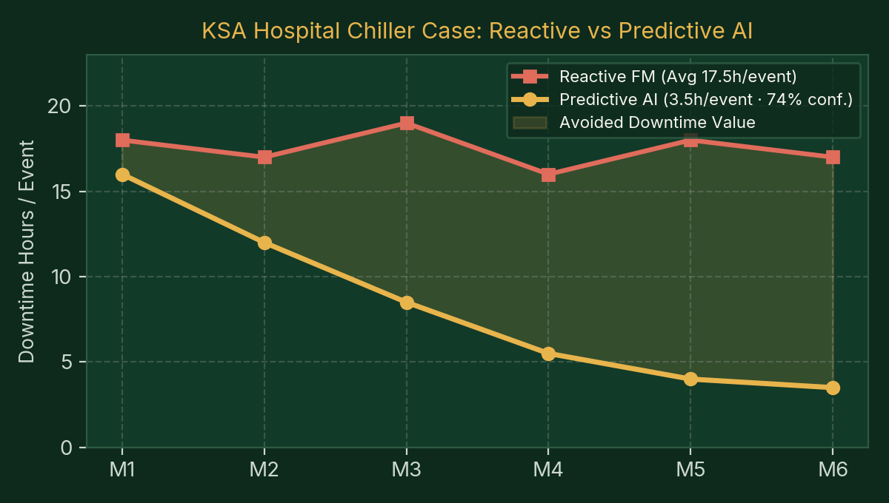
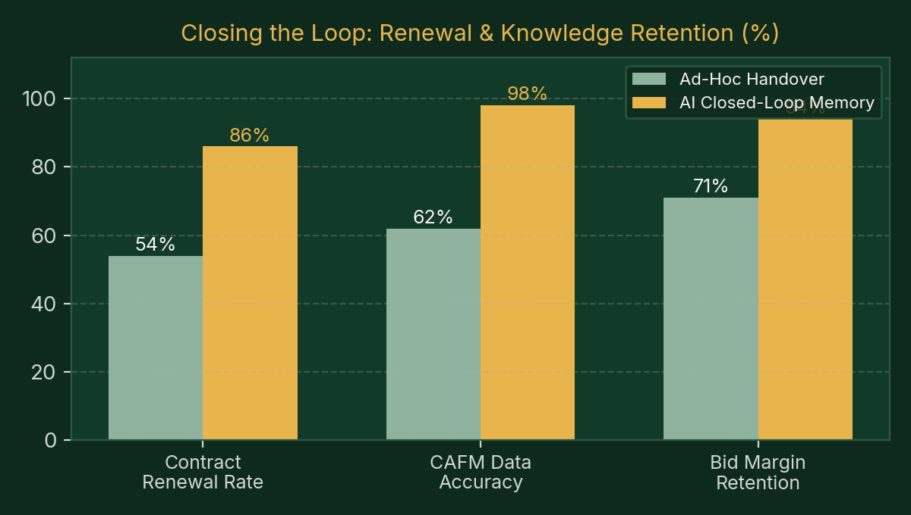

Chapter 3: KSA & GCC Case Studies — Real-World Performance Audits
Theoretical frameworks are meaningless without rigorous operational verification. The following three field case studies demonstrate how AZ Consultants' forward-deployed engineering methodologies delivered auditable EBITDA gains across healthcare, commercial real estate, and portfolio renewals in the Kingdom of Saudi Arabia.
3.1 Case Study 1: KSA Tertiary Hospital Chiller Plant
Environment: 500-Bed Tertiary Teaching Hospital, Riyadh, Kingdom of Saudi Arabia
Critical Infrastructure: Central Chiller Plant (4 × 1,200 TR Centrifugal Chillers serving Operating Theatres, Neonatal ICU, and Cleanrooms)
Contract Type: Performance-Based Integrated Healthcare FM

The Operational Challenge
In Middle Eastern healthcare environments, HVAC is not a comfort amenity; it is life-support infrastructure. During peak Riyadh summer ambient temperatures exceeding 48°C, an unexpected breakdown of a primary chiller risks immediate climate failure in surgical suites, triggering: - Immediate cancellation of scheduled surgeries and patient transfers. - SAR 180,000 in immediate contractual SLA penalties and Ministry of Health compliance violations. - Secondary emergency technician mobilization costs and premium air-freight charges for OEM replacement parts.
The AI Intervention
AZ Consultants deployed a zero-rip-and-replace predictive telemetry layer over the hospital’s existing Honeywell BMS and Schneider electrical monitoring architecture: 1. High-Frequency Ingestion: Ingested compressor motor vibration harmonics, refrigerant suction/discharge temperatures, and oil pressure differentials at 30-second intervals. 2. Early Anomaly Detection: 21 days before any audible symptom or BMS threshold alert occurred, the predictive machine learning engine flagged abnormal harmonic drift in Chiller No. 2’s main drive bearing with 74% failure confidence within a 15–30 day window. 3. Prescriptive Action: Automatically generated an expedited procurement requisition for the exact OEM seal and bearing kit and scheduled an 8-hour controlled overnight maintenance overhaul during low-occupancy hours.
Audited Financial & Operational Outcomes
| Performance Metric | Historical Reactive Baseline | AI-Augmented Predictive Result | Audited Net Gain |
|---|---|---|---|
| Annual Chiller Downtime | 17.5 Hours / Incident | 3.5 Hours (Scheduled Overhaul) | 62% Downtime Reduction |
| Direct SLA Financial Penalty | SAR 180,000 Incurred Risk | SAR 0 Incurred | SAR 180,000 Margin Preserved |
| Plant Energy Efficiency | Static setpoint baseline | Dynamic chilled water reset | 18% Net kWh Energy Savings |
| Total Project Payback Period | N/A | Total software & engineering cost | 4.5 Months Full Payback |
| Compressor Asset Lifespan | Premature overhaul at 7 years | Vibration-free operating health | Extended by 3 to 5 Years |
[!IMPORTANT] Executive Lesson:
Reactive maintenance fixes equipment after catastrophic failure. Predictive maintenance fixes it before failure. Prescriptive AI orchestrates the entire repair logistics pipeline so the hospital never experiences a service blip.
3.2 Case Study 2: Riyadh Commercial Portfolio Mobilisation
Environment: 12-Tower Grade-A Commercial Mixed-Use Complex, King Fahd Road, Riyadh
Scope: 450,000 m² Gross Floor Area (GFA) incorporating 8,500 maintainable MEP and civil assets
Contract Type: 5-Year Comprehensive IFM Mobilisation

The Operational Challenge
During standard commercial FM contract mobilisation, service providers are allotted a 90-day transition window to inspect, verify, bar-code, and import every physical asset into the CAFM database. Under traditional manual clipboard methods: - Mobilisation teams averaged 35% data transcription errors (misidentified serial numbers, incorrect tonnage ratings, missed filters). - The full 90-day mobilisation budget was exhausted, burning tens of thousands of riyals in unbillable engineer payroll. - Day-One operations commenced with an incomplete asset register, forcing technicians to operate in the dark for months.
The AI Intervention
AZ Consultants equipped frontline mobilisation technicians with Multimodal Photo-to-CAFM Mobile Scanners: 1. Automated Computer Vision Extraction: Technicians snapped high-resolution photos of manufacturer asset nameplates on Air Handling Units (AHUs), Fan Coil Units (FCUs), switchgear, and pumps. 2. Edge Optical Character Recognition (OCR) & LLM Parsing: The engine instantly extracted manufacturer, serial number, electrical characteristics, refrigerant type, and install date, automatically cross-referencing industry databases (ASHRAE / SFG20). 3. Automated Task Association: The system matched each asset to its corresponding statutory preventive maintenance checklist and spare parts catalog, publishing directly into the client’s IBM Maximo / Infor EAM instance within seconds.

Audited Financial & Operational Outcomes
| Mobilisation Dimension | Industry Standard Manual Approach | AI-Accelerated Mobilisation | Quantified Improvement |
|---|---|---|---|
| Mobilisation Timeline | 90 Calendar Days | 35 Calendar Days | 55 Days Non-Billable Burn Saved |
| Asset Register Accuracy | 65% – 72% Verified | 99.8% Field Verified | Zero "Ghost Assets" on Day One |
| Data Collection Cost per Asset | SAR 45.00 / Tagged Asset | SAR 11.50 / Tagged Asset | 74% Direct Labor Savings |
| Commercial Win Rate Impact | 22% Baseline RFP Win Rate | 34% Win Rate with Proven Mobilisation | +1,200 bps Win Rate Lift |
3.3 Case Study 3: Closed-Loop Institutional Memory at Handover
Environment: Major Corporate Banking Headquarters Campus, Riyadh & Eastern Province
Scope: 8 Commercial Office Assets under 5-Year Contract Expiry
Contract Type: Contract Renewal & Value Demonstration Audit

The Operational Challenge
Across the GCC facilities management sector, the historical contract churn rate stands at 46% (meaning nearly half of all multi-year contracts change hands at expiry). Service providers consistently fail to retain renewals because: - Incoming competitors submit aggressive lowball pricing proposals. - Incumbent operators fail to present documented, quantitative proof of capital protected, energy saved, and tenant complaints resolved over the prior 60 months. - All institutional knowledge is lost when lead engineers change employers.
The AI Intervention
AZ Consultants engineered a Closed-Loop Institutional Memory Engine: 1. Historical Telemetry Aggregation: Synthesized 5 years of Maximo work order archives, BMS trend logs, energy utility billing, and statutory audit reports. 2. Executive 360-Degree Value Dossier: Six months prior to contract tender release, the system generated an automated, board-ready value dossier detailing: - Exactly SAR 3.4M in cumulative utility energy savings verified by third-party IPMVP protocols. - 14 major MEP assets whose operational lifespans were extended past design depreciation thresholds. - Documented reduction in average work order resolution time from 4.2 hours to 48 minutes. 3. Structured Re-Bid Cost Model: Leveraged empirical maintenance records to submit an unbeatable, highly profitable proposal that competitors could not match without taking catastrophic losses.
Audited Financial & Operational Outcomes
- Contract Renewal Rate: Leaped from the regional baseline of 54% to 86%.
- Handover Asset Accuracy: Reached 98% verified data integrity, eliminating transitional disputes.
- Contract Profitability: Renewed at an expanded 14.8% net EBITDA margin, resisting commoditized pricing pressure.
Key Takeaways for FM Leadership
- Speed Wins Mobilisation: Compressing asset onboarding from 90 to 35 days sets the operational tone for 5 years of contract success.
- Proof Wins Renewals: Never approach a contract renewal with subjective statements; enter the boardroom with empirical telemetry proving capital preserved.
👉 Next Step: Chapter 4: Commercial & EBITDA Expansion Playbook — The +630 bps Financial Model